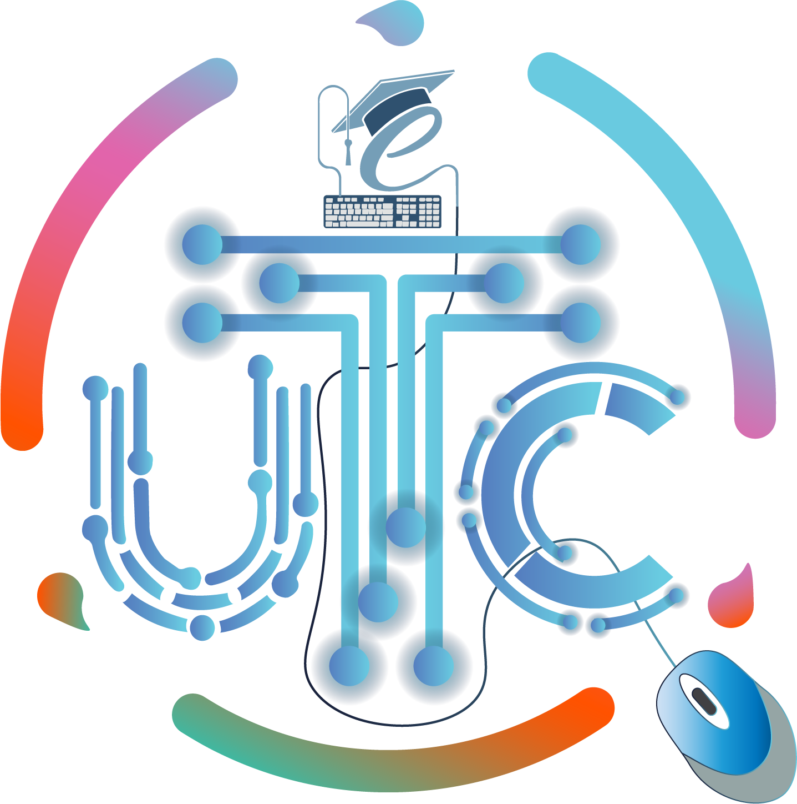

বিজয় টু ইউনিকোড | ইউনিকোড টু বিজয় | কনভার্টর
Home
Blog
Courses
Shop
Register as Instructor
Portfolio
Services
বিজয় টু ইউনিকোড কনভার্টর
বিজয় টু ইউনিকোড
ইউনিকোড টু বিজয়
Typing Speed Test
Appearance
Plugins
Click Here To Voice Typing
🎤
✖
ইউনিকোড
Copy Text
ইউনিকোড টু বিজয়
➡
⬅
বিজয় টু ইউনিকোড
⬅
মুছে ফেলুন
➡
বিজয়
Copy Text